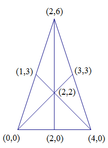

Project Euler 163
题目
Cross-hatched triangles
Consider an equilateral triangle in which straight lines are drawn from each vertex to the middle of the opposite side, such as in the size \(1\) triangle in the sketch below.

Sixteen triangles of either different shape or size or orientation or location can now be observed in that triangle. Using size \(1\) triangles as building blocks, larger triangles can be formed, such as the size \(2\) triangle in the above sketch. One-hundred and four triangles of either different shape or size or orientation or location can now be observed in that size \(2\) triangle.
It can be observed that the size \(2\) triangle contains \(4\) size \(1\) triangle building blocks. A size \(3\) triangle would contain \(9\) size \(1\) triangle building blocks and a size \(n\) triangle would thus contain \(n^2\) size \(1\) triangle building blocks.
If we denote \(T(n)\) as the number of triangles present in a triangle of size \(n\), then
\(T(1) = 16\)
\(T(2) = 104\)
Find \(T(36)\).
解决方案
为了避免答案因小数出现精度问题，我们决定将整个三角形进行拉伸变换，这将不会影响原来三角形的所有点、线相对位置。如下图所示，如果原来的单独一个等边三角形的边长为\(2\)，那么边长将拉伸到原来的\(2\)倍数；其高为\(\sqrt{3}\)，拉伸到原来的\(2\sqrt{3}\)倍长度。可以发现，这些点的坐标都已经变成了整数。

为了将三角形的数量数出来，我们可以每次枚举三条斜率不相同、不交于同一点的一组的线段，然后判断它们的交点是否在大三角形内部或边上即可。
将前\(4\)项暴力枚举出来后，查询OEIS，发现结果为A210687。
在FORMULA一栏中，发现如下信息：
1 | a(n) = (1678*n^3+3117*n^2+88*n-345*Mod[n,2]-320*Mod[n,3]-90*Mod[n,4]-288*Mod[n^3-n^2+n,5])/240. (Bill Daly) |
这说明第答案为： \[T(n)=\dfrac{1678n^3+3117n^2+88n-345\cdot(n\%2)-320\cdot(n\%3)-90\cdot(n\%4)-288\cdot ((n^3-n^2+n)\%5)}{240}\]
代码
1 |
|
1 | N = 36 |